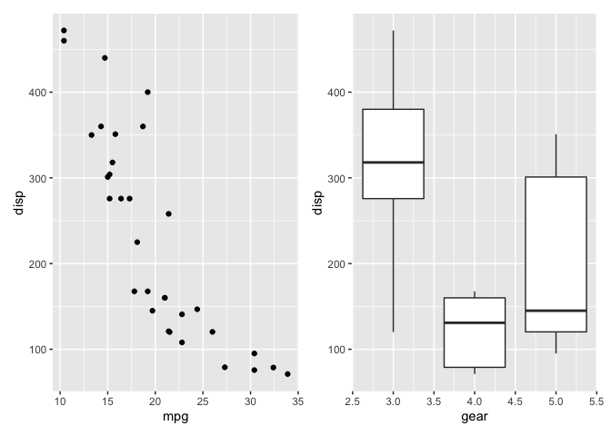
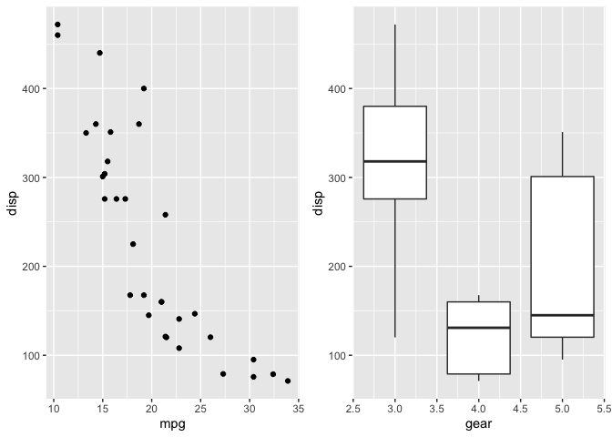

The goal of patchwork is to make it ridiculously simple to combine separate ggplots into the same graphic. As such it tries to solve the same problem as gridExtra::grid.arrange() and cowplot::plot_grid but using an API that incites exploration and iteration, and scales to arbitrarily complex layouts.
Installation
You can install patchwork from CRAN using install.packages('patchwork'). Alternatively you can grab the development version from github using devtools:
# install.packages("devtools")
devtools::install_github("thomasp85/patchwork")Basic example
The usage of patchwork is simple: just add plots together!
library(ggplot2)
library(patchwork)
p1 <- ggplot(mtcars) + geom_point(aes(mpg, disp))
p2 <- ggplot(mtcars) + geom_boxplot(aes(gear, disp, group = gear))
p1 + p2
patchwork provides rich support for arbitrarily complex layouts with full alignment. As an example, check out this very readable code for nesting three plots on top of a third:
p3 <- ggplot(mtcars) + geom_smooth(aes(disp, qsec))
p4 <- ggplot(mtcars) + geom_bar(aes(carb))
(p1 | p2 | p3) /
p4
Learn more
patchwork can do so much more. Check out the guides for learning everything there is to know about all the different features:
Code of Conduct
Please note that the patchwork project is released with a Contributor Code of Conduct. By contributing to this project, you agree to abide by its terms.